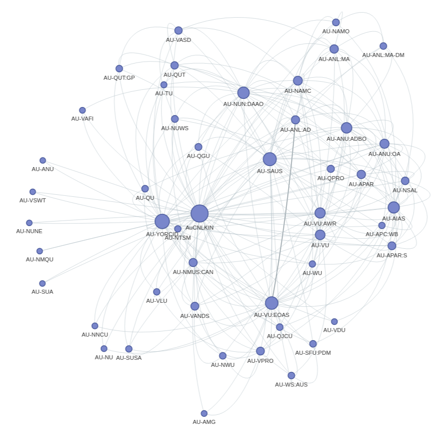

Visualising intersections and overlaps between data sources
The People & Organisations zone aggregates information from a range of data sources into individual records. In this notebook we'll explore connections between the data sources by creating a network graph and UpSet charts.

Other options¶
Additional documentation¶
Getting help¶
Cite as¶
Sherratt, Tim. (2023). GLAM-Workbench/trove-people (version v1.0.0). Zenodo. https://doi.org/10.5281/zenodo.7645059